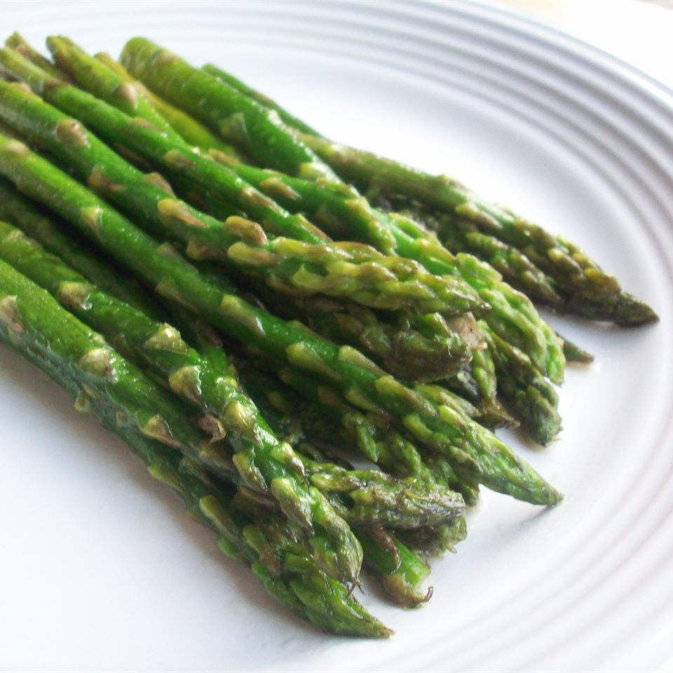

Pan Fried Asparagus

Description
Learn how to cook asparagus on the stove by pan-frying it in butter with garlic for a delicious Italian-style side dish. My family (even the kids) love asparagus cooked this way!
Ingredients
- 1/4 cup butter
- 2 tablespoons olive oil
- 1 teaspoon coarse salt
- 1/4 teaspoon ground black pepper
- 3 cloves garlic, minced
- 1 pound fresh asparagus spears, trimmed
Steps
- Melt butter in a skillet over medium-high heat. Add olive oil, salt, and pepper; cook and stir until garlic is fragrant, about 30 seconds.
- Add asparagus and cook until fork-tender, turning asparagus often to ensure even cooking, about 10 minutes.